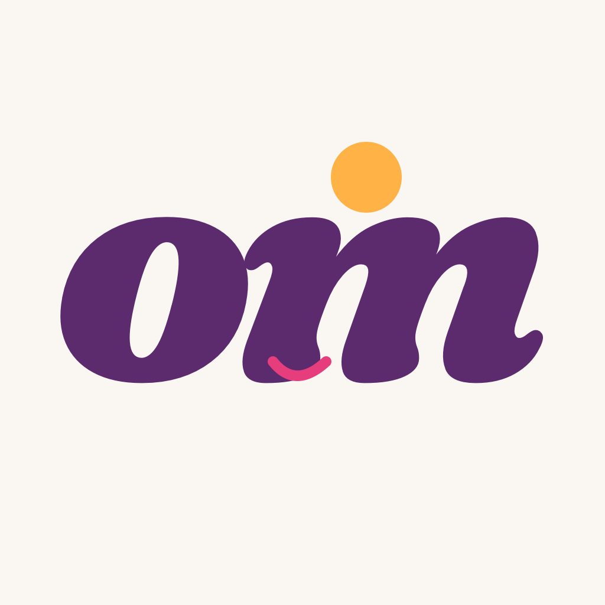
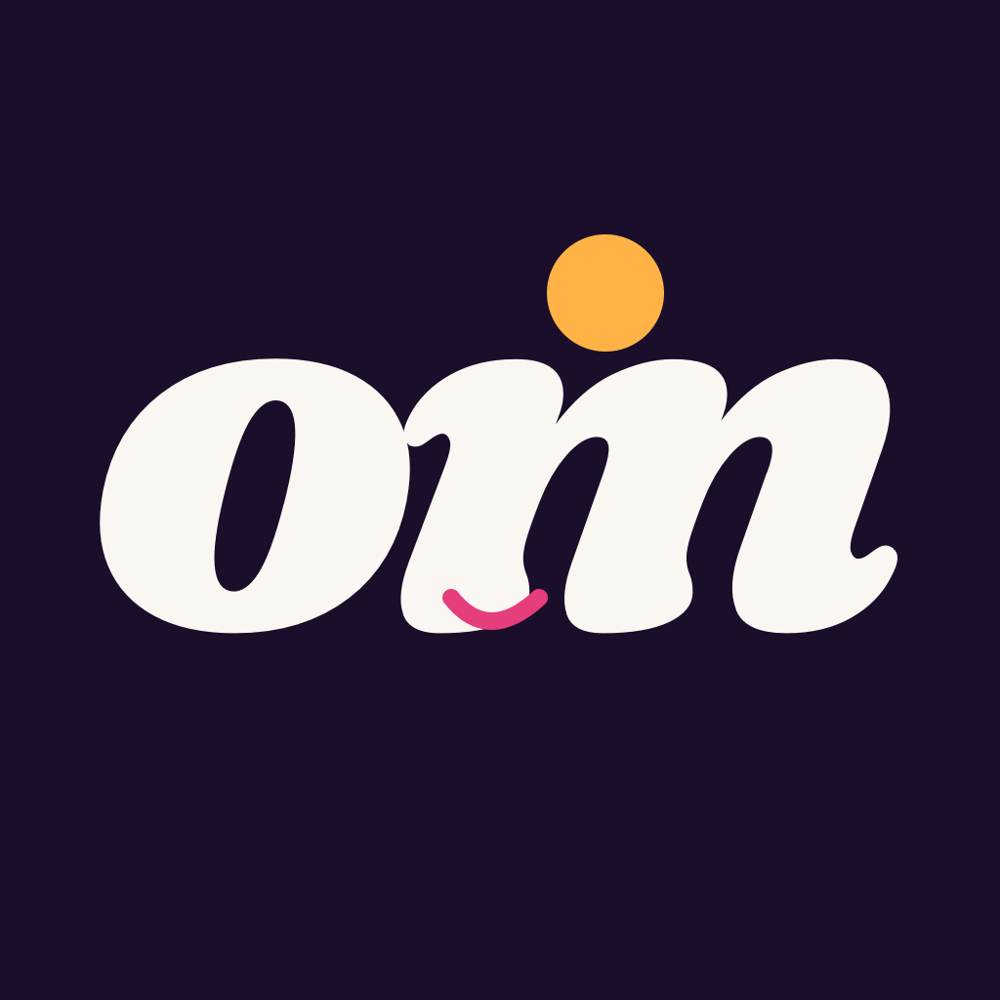
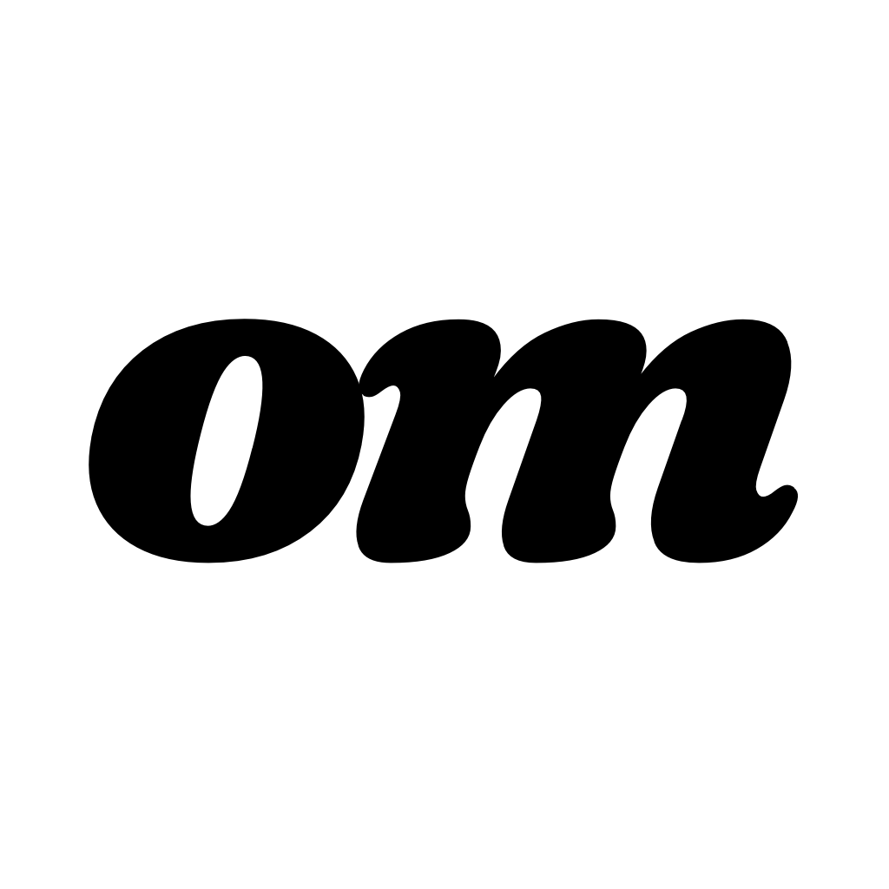
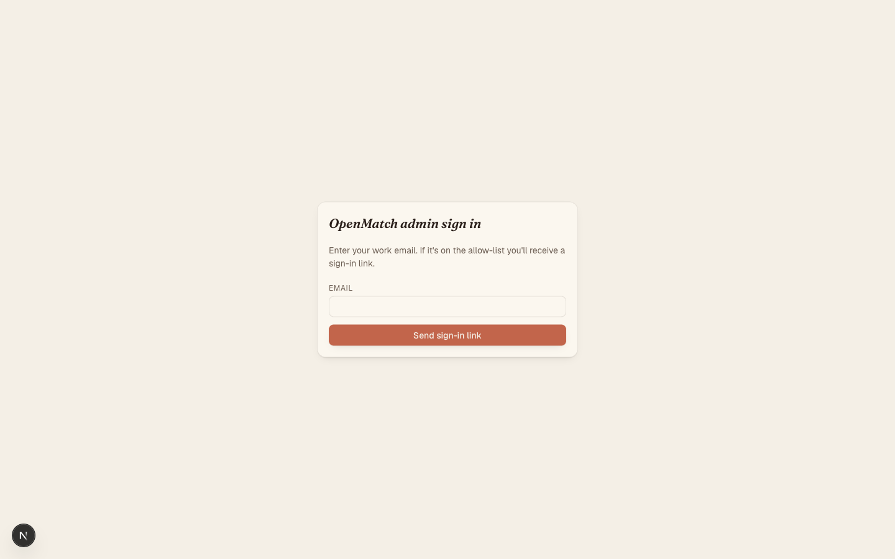
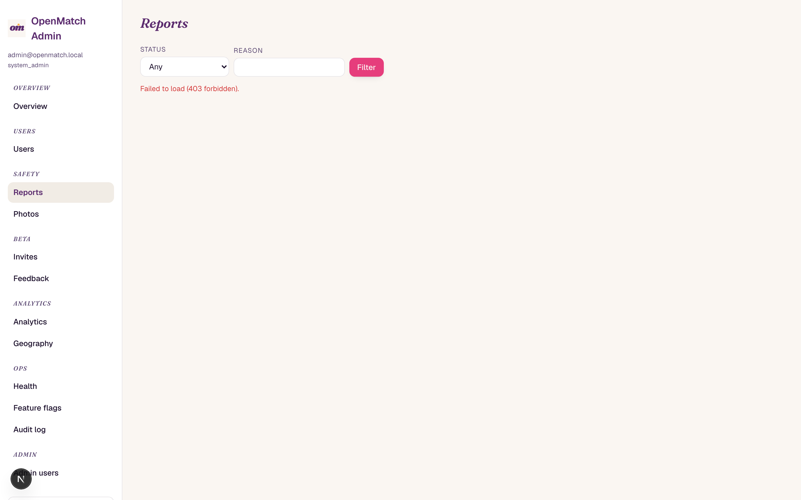
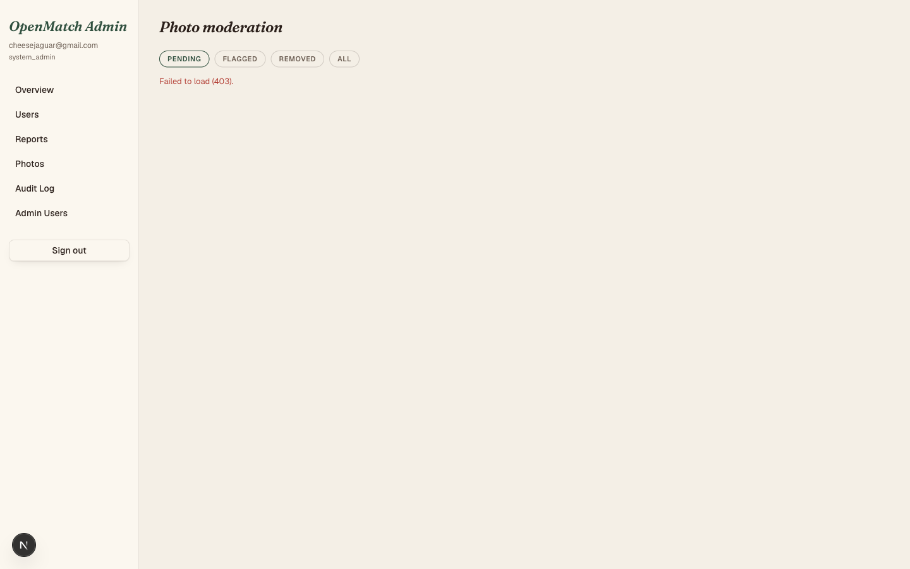
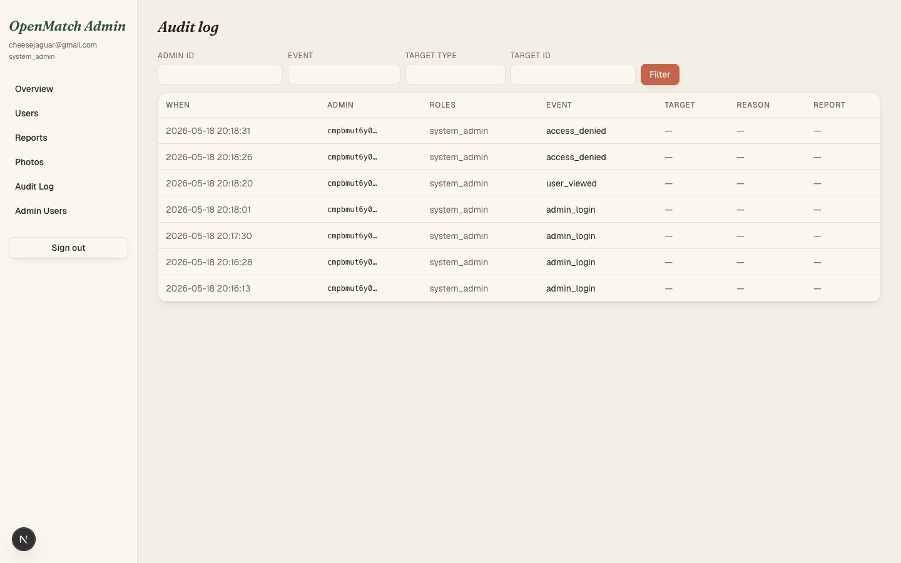
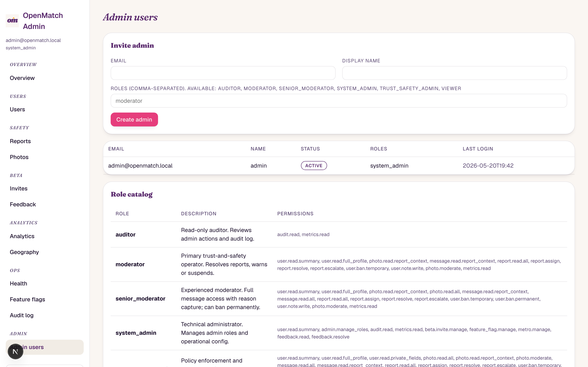

Brand · the italic 'om' wordmark
Phase C introduced a single typographic mark in italic Fraunces — three palette variants for
light surfaces, dark surfaces, and tinted hero treatments. Source SVGs live in
assets/logo/; rasterised PNGs ship in the iOS asset catalog and the admin
public/ directory.

LWordmark · light
Plum (#5B2B6E) "om" in italic Fraunces on paper — primary light-mode lockup.

DWordmark · dark
Paper "om" on ink — dark-mode + splash treatments.

TWordmark · tinted
Magenta "om" for hero / overlay moments — the match overlay and the welcome hero.
Source files: assets/logo/om-mark-light.svg,
assets/logo/om-mark-dark.svg,
assets/logo/om-mark-tinted.svg. Favicon scales (16/32/60 px) are generated from
the light variant; preview PNGs in branding/ are regenerated alongside iOS
captures.
iOS — consumer app
DEBUG-only launch envs OPENMATCH_AUTO_LOGIN,
OPENMATCH_INITIAL_TAB, and OPENMATCH_FORCE_MATCH drive the screenshot
session. Captures below describe the Aurora Dawn surfaces; rerun the capture protocol after
every aesthetic delta.

01Welcome
Italic "om" wordmark on paper, magenta primary CTA, periwinkle-outlined Apple sign-in. Hero typography uses the Fraunces hero-token scale introduced in Phase B.

02Swipe deck
Profile card on paper with the new OMRadius scale (lg = 24pt). Back-card
preview renders photo-only at scaleEffect(0.96) / opacity(0.7).
Action row positioning is configurable in Phase E (right / left / center).

03Match overlay
Magenta hero on paper, letter-by-letter spring reveal, 120-particle multi-color burst (plum / magenta / marigold / periwinkle). "Send a message" CTA in magenta; "Keep swiping" ghost. Phase D dopamine treatment.

04Likes
Paper background, plum "Likes" nav title in italic Fraunces, magenta "free, always" banner. Action buttons honor the configurable thumb-reach picker from Phase E.

05Chat
Paper background, plum "Chat" nav title. Empty state renders the periwinkle Aurora placeholder at 96pt with a Fraunces microcaption from the new Phase B token.

06Profile
Four OMSection cards on paper: summary + Discovery + Privacy & Safety +
About. Section headers in italic Fraunces plum small-caps. Sign-out button in magenta.
RoundedRectangle(cornerRadius: …) migrated to
OMShape.card(OMRadius.*); every hard-coded color migrated to the Aurora
Dawn token set.
Settings · thumb-reach picker
Phase E introduced a configurable thumb-reach picker under Settings → Accessibility — users pick where the swipe action buttons render (right-hand, left-hand, or centered). Defaults to right-hand.
Capture protocol: SIMCTL_CHILD_OPENMATCH_AUTO_LOGIN=u001
SIMCTL_CHILD_OPENMATCH_INITIAL_TAB=settings xcrun simctl launch booted … then navigate
to Accessibility. The picker uses OMSegmented with the magenta active state.
Other restyled screens
These views were swept by Phase F (RoundedRectangle + color-token migration) but require deeper navigation than the screenshot launch-args can reach. All follow the Aurora Dawn token set visible in Profile (#06) and Chat (#05).
- Settings —
OMSectionstacks;OMTogglewith magenta tint; row chevrons in plum. - Edit profile — Photos grid in
OMShape.card(OMRadius.lg); basics in labeled fields; bio in multiline TextField. - Looking for — All four preference groups rendered with
OMStepper,OMPicker,OMToggle,OMSegmentedon the Aurora palette. - Algorithm transparency — Hero title in italic Fraunces plum; weight bars in magenta ProgressView; "never use" list with periwinkle-tinted icons.
- Safety center — Sections converted to
OMSection; tips render as icon+text rows; crisis links useOMRowwith chevron. - Blocked users — Empty state shows the periwinkle Aurora placeholder; populated list uses dividers between
OMRows. - Conversation — Outgoing bubbles on plum with paper text, incoming bubbles on
surfaceElevatedwith a hairline stroke; input bar has a magenta send button. - Onboarding likes-visibility step — Segmented control as
OMSegmentedwith magenta active state.
Admin dashboard
Phase F sweep extended to the admin app — Tailwind tokens migrated to Aurora Dawn (plum headers, magenta primary actions, periwinkle accents). Screenshots reflect the admin login, overview, users, reports, photo queue, audit log, and admin management routes.

00Login
Email + TOTP gate; plum heading on paper.

01Overview
Metric tiles with italic Fraunces numerals on paper.

02Users
Search + status filter; 20 seeded users.

03Reports
Triage queue with magenta severity chips.

04Photos
Photo moderation grid with periwinkle action rail.

05Audit
Append-only audit log; tag chips colored by event kind.

06Admins
Admin management; invite + role rotation; magenta destructive actions.
Change log
Aesthetic V2 — Aurora Dawn shipped in six PRs over 2026-05-19 / 2026-05-20. Phase G (this PR) is the consolidation pass — gallery refresh, brand index, and report-card change-log entry.
| PR | Phase | Headline |
|---|---|---|
| #53 | A | Aurora Dawn palette (plum / magenta / marigold / periwinkle / paper / ink) + consolidated OMRadius token scale. |
| #54 | B | Expanded Fraunces + Geist weight scale; new hero + microcaption typography tokens. |
| #57 | C | Italic 'om' wordmark + light / dark / tinted variants + asset catalog regeneration. |
| #55 | D | Dopamine match overlay — magenta hero typography, letter-by-letter spring reveal, 120-particle multi-color burst. |
| #56 | F | Repo-wide sweep — every RoundedRectangle migrated to OMShape; every hard-coded color migrated to Aurora Dawn tokens. |
| #58 | E | Configurable right / left / center action-button thumb-reach picker in Settings → Accessibility. |